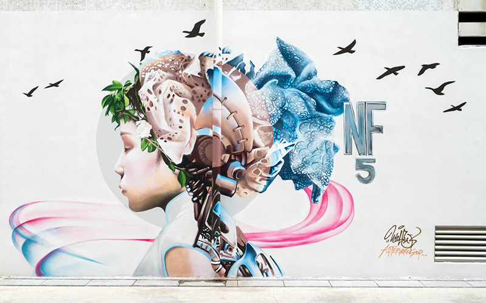
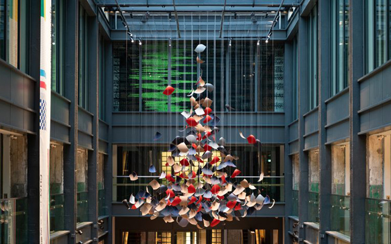
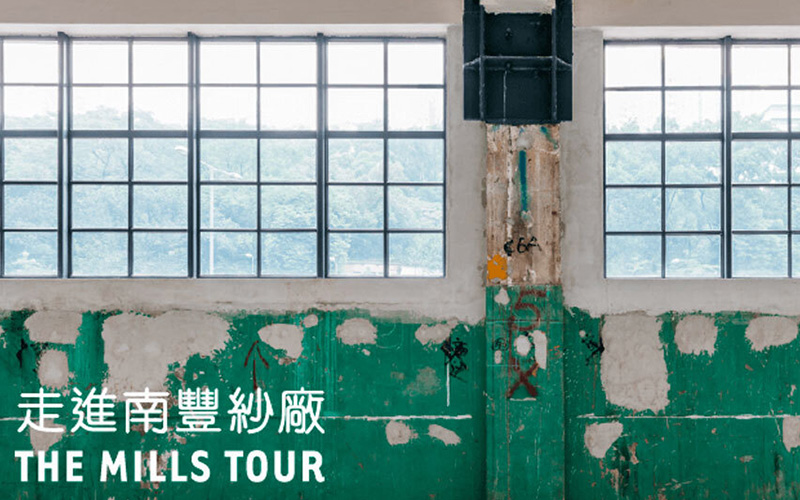

THE MILLS | 南豐紗廠-文青集市
The Mills is a vibrant cultural and retail complex located in Tsuen Wan, Hong Kong, that creatively blends heritage with modernity. Originally a textile factory, The Mills has been transformed into a space that highlights Hong Kong's industrial past while promoting innovation and creativity. Opened in 2018, it features a mix of shops, eateries, art installations, and community spaces, making it a unique destination for both locals and tourists.


